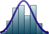

List of statisticians
From Wikipedia, the free encyclopedia
| Statistics |
|---|
|  |
{kind=link}
This list of statisticians lists people who have made notable contributions to the theories or application of statistics, or to the related fields of probability or machine learning. Also included are actuaries and demographers.
A[edit]
- Aalen, Odd Olai (1947–)
- Abbott, Edith (1876–1957)
- Abelson, Robert P. (1928–2005)
- Abramovitz, Moses (1912–2000)
- Achenwall, Gottfried (1719–1772)
- Adelstein, Abraham Manie (1916–1992)
- Ahsan, Riaz (1951–2008)
- Aitchison, John (1926–)
- Aitken, Alexander (1895–1967)
- Akaike, Hirotsugu (1927–2009)
- Ali, Mir Masoom (1937–)
- Allen, R. G. D. (1906–1983)
- Allison, David B.
- Altman, Doug (1948–)
- Amemiya, Takeshi (1938–)
- Anderson, Oskar (1887–1960)
- Anderson, Theodore Wilbur
- Anscombe, Francis (1918–2001)
- Anselin, Luc
- Armitage, Peter (1924–)
- Arrow, Kenneth
- Ashley-Cooper, Anthony
- Austin, Oscar Phelps
- Ayres, Leonard Porter
B[edit]
- Bahadur, Raghu Raj (1924–1997)
- Balding, David
- Barnard, George Alfred (1915–2002)
- Barnett, William A.
- Bartels, Julius
- Bartlett, M. S. (1910–2002)
- Bascand, Geoff
- Basu, Debabrata (1924–2001)
- Baxter, Laurence (1954–1996)
- Bayes, Thomas (1702–1761)
- Beale, Calvin
- Behm, Ernst
- Benjamin, Bernard
- Benzécri, Jean-Paul
- Berger, James
- Berkson, Joseph (1899–1982)
- Bernardo, José-Miguel
- Berry, Don
- Best, Alfred M. (1876–1958)
- Beveridge, William
- Bhat, B. R.
- Bhat, P. N. Mari
- Bhat, U. Narayan
- Bienaymé, Irénée-Jules
- Bingham, Christopher
- Birnbaum, Allan (1923–1976)
- Bisika, Thomas John
- Blackwell, David (1919–)
- Bliss, Chester Ittner (1899–1979)
- Block, Maurice
- Bloom, David E.
- Bodio, Luigi
- Bodmer, Walter
- Bonferroni, Carlo Emilio (1892–1960)
- Booth, Charles
- Boreham, John
- Bortkiewicz, Ladislaus (1868–1931)
- Bose, R. C. (1901–1987)
- Botha, Roelof
- Bottou, Léon
- Bowley, Arthur Lyon (1869–1957)
- Box, George E. P. (1919–)
- Boyle, Phelim
- Brad, Ion Ionescu de la (1818–1891)
- Brassey, Thomas
- Breiman, Leo
- Breslow, Norman (1941–)
- Brooks, Steve
- Brown, Lawrence D.
- Burgess, Warren Randolph
- Buzek, Józef
C[edit]
- Cai, T. Tony
- Caird, James
- Caldwell, John
- Cam, Lucien Le (1924–2000)
- Campion, Harry
- Candès, Emmanuel
- Carver, Harry C.
- Castles, Ian
- Chakrabarti, M. C.
- Chalmers, George (1742–1825)
- John M. Chambers
- Champernowne, D. G. (1912–2000)
- Charles, Enid (1894–1972)
- Charlier, Carl (1862–1934)
- Chebyshev, Pafnuty (1821–1894)
- Chen, Louis Hsiao Yun
- Chernoff, Herman (1923–)
- Chervonenkis, Alexey (1938–)
- Chow, Yuan-Shih
- Chuprov, Alexander Alexandrovich (1874–1926)
- Chuprov, Alexander Ivanovich (1841–1908)
- Clark, Colin (1905–1989)
- Clarke, Richard W. B. (1910–1975)
- Clayton, David (1944–)
- Coale, Ansley J.
- Coats, Robert H. (1874–1960)
- Cochran, William Gemmell (1909–1980)
- Cockfield, Arthur
- Coghlan, Timothy Augustine (1856–1926)
- Cohen, Jacob
- Cohen, Joel E.
- Coifman, Ronald
- Coleman, David
- Cook, Len (1949–)
- Cordeiro, Gauss Moutinho (1952–)
- Cornfield, Jerome (1912–1979)
- Courtney, Leonard
- Cover, Thomas M.
- Cox, David (1924–)
- Cox, Gertrude Mary (1900–1978)
- Cox, Richard Threlkeld (1898–1991)
- Cramér, Harald (Sweden, 1893–1985)
- Crome, August Friedrich Wilhelm
- Crosby, James
- Cudmore, Sedley
- Cunliffe, Stella
- Czekanowski, Jan
D[edit]
- Daniels, Henry (1912–2000)
- Dantzig, David van (1900–1959)
- Dantzig, George (1914–2005)
- Darwin, John (1923–2008)
- David, Florence Nightingale (1909–1993)
- Davies, Griffith (1788–1855)
- Davis, Kingsley (1908–1997)
- Dawid, Philip (1946–)
- Daykin, Christopher (1948–)
- DeGroot, Morris H. (1931–1989)
- Deming, W. Edwards (1900–1993)
- Dempster, Arthur P.
- Desrosières, Alain
- Dewey, Davis Rich
- Diaconis, Persi (1945–)
- Dilke, Sir Charles
- Dodge, Harold F.
- Dodson, James
- Doll, Sir Richard (1912–2005)
- Donnelly, Peter
- Donoho, David
- Doob, Joseph Leo
- Dublin, Louis Israel
- Duckworth, Frank
- Dudley, Richard M.
- Duncan, David F.
- Duncan, Otis Dudley
- Dunn, Halbert L.
- Dunnell, Karen (1946–)
- Dunnett, Charles
- Durbin, James
- Dvoretzky, Aryeh
E[edit]
- Easton, Brian
- Eckler, A. Ross (1901–1991)
- Eckler, A. Ross Jr. (1927–)
- Eden, Sir Frederick (1766–1809)
- Edgeworth, Francis Ysidro (1845–1926)
- Edwards, A. W. F. (1935–)
- Efron, Bradley (1938–)
- Eisenhart, Churchill (1913–1994)
- Elderton, Ethel M.
- Elderton, William Palin
- Elston, Robert C.
- Engel, Ernst (1821–1896)
- Engle, Robert F.
- Erlang, A. K. (1878–1929)
- Erritt, John
- Ezekiel, Mordecai
F[edit]
{kind=link}
- Fabri, Johann Ernst
- Fallati, Johannes
- Fan, Jianqing
- Farr, William (1807–1883)
- Farrer, Thomas
- Fechner, Gustav (1801–1887)
- Fellegi, Ivan (1935–)
- Feller, William
- Fernique, Xavier
- Fienberg, Stephen
- Finetti, Bruno de (1906–1985)
- Finlaison, John
- Finney, D. J. (1917–)
- Fisher, Irving (1867–1947)
- Fisher, Sir Ronald A. (1890–1962)
- Fleetwood, William (1656–1723)
- Fleiss, Joseph L. (1937–2003)
- Flux, A. William
- Foot, David
- Fowler, Henry
- Fox, John (1945–)
- Frankel, Lester
- Franscini, Stefano
- Freedman, David A.
- Freedman, Ronald
- Friedman, Milton
- Frigessi, Arnoldo di Rattalma (1959–)
G[edit]
- Gain, Anil Kumar (1919–1978)
- Gallant, A. Ronald
- Gallup, George (1901–1984)
- Galton, Francis (1822–1911)
- Gauquelin, Michel
- Geary, Roy C.
- Geisser, Seymour (1929–2004)
- Geman, Donald (1943–)
- Ghosh, Jayanta Kumar
- Ghysels, Eric
- Giblin, Lyndhurst (1872–1951)
- Giffen, Robert (1837–1910)
- Gill, Richard D. (1951–)
- Gini, Corrado (1884–1965)
- Glass, David
- Glass, Gene V. (1940–)
- Goldman, Samuel
- Goldstein, Harvey
- Gompertz, Benjamin (1779–1865)
- Good, I. J. (1916–2009)
- Good, Phillip(1937–)
- Goodnight, James
- Goschen, George
- Gosset, William Sealy (known as "Student") (1876–1937)
- Granger, Clive
- Graunt, John (1620–1674)
- Gray, Mary W.
- Grebenik, Eugene
- Green, Peter
- Greenland, Sander
- Greenwood, Major (1880–1949)
- Griffiths, Robert
- Griliches, Zvi
- Grimmett, Geoffrey (1950–)
- Guerry, André-Michel
- Gumbel, Emil Julius (1891–1966)
- Guttman, Louis
- Guy, William (1810–1885)
- Gy, Pierre (1924–)
H[edit]
- Haberman, Steven (1951–)
- Hájek, Jaroslav (1926–1974)
- Hajnal, John (1924–2008)
- Hald, Anders (1913–)
- Hastie, Trevor
- Hall, Peter Gavin (1951–)
- Halmos, Paul (1916–2006)
- Hamilton, Lord George (1845–1927)
- Hand, David (1950–)
- Hardin, Garrett (1915–2003)
- Harris, Ted (1919–2006)
- Hartley, Herman Otto (1912–1980)
- Hayter, Henry Heylyn (1821–1895)
- Healy, Michael(1923–)
- Hedges, Larry V.
- Hein, Jotun (1956–)
- Helmert, Friedrich Robert (1843–1917)
- Henderson, Charles Roy (1911–1989)
- Heyde, Chris (1939–2008)
- Hibbert, Sir Jack (1932–2005)
- Hickman, James C. (1927–2006)
- Hilbe, Joseph (1944–)
- Hill, Austin Bradford (1897–1991)
- Hill, Joseph Adna(1860–1938)
- Hills, Michael
- Hinkley, David V.
- Hjort, Nils Lid (1953–)
- Hoeffding, Wassily (1914–1991)
- Hoem, Jan (1939–)
- Hollander, Myles (1941–)
- Hollerith, Herman (1860–1929)
- Holmes, Chris
- Holt, Tim (1943–)
- Holtsmark, Gabriel Gabrielsen
- Hogben, Lancelot (1895–1975)
- Hooker, Reginald Hawthorn (1867–1944)
- Hotelling, Harold (1895–1973)
- Huff, Darrell (1913–2001)
- Hunter, Sir William Wilson(1840–1900)
- Hunter, William (1937–1986)
- Hutchinson, Col
- Huzurbazar, V. S.
I[edit]
- Ihaka, Ross (1954/1955–)
- Iman, Ronald L.
- Irwin, Joseph Oscar (1898–1982)
- Ishikawa, Kaoru (1915–1989)
- Isserlis, Leon (1881–1966)
J[edit]
- Jacoby, Oswald (1902–1984)
- Jaffrey, Thomas (1861–1953)
- James, Bill (1949–)
- Jaynes, Edwin Thompson (1922–1998)
- Jefferys, William H. (1940–)
- Jeffreys, Harold (1891–1989)
- Jellinek, E. Morton (1890–1963)
- Jenkins, Gwilym (1933–1982)
- Jevons, William Stanley (1835–1882)
- Jobson, Alexander (1875–1933)
- Johnson, Norman Lloyd (1917–2004)
- Johnston, Robert Mackenzie
- Jones, Edward
- Jones-Loyd, Samuel
- Jordan, Michael I.
- Jöreskog, Karl Gustav
- Jouffret, Esprit
- Juran, Joseph M. (1904–)
- Jurin, James (1684–1750)
K[edit]
- Kac, Mark
- Kempthorne, Oscar
- Kendall, David George (1918–2007)
- Kendall, Sir Maurice (1907–1983)
- Kennedy, Joseph C. G.
- Khattree, Ravindra
- Khmaladze, Estate V.
- Kiefer, Jack
- Kiær, Anders Nicolai
- King, Gregory
- King, Willford I.
- Kingman, John (1939–)
- Kish, Leslie (1910–2000)
- Knibbs, George Handley
- Kočović, Bogoljub
- Kolmogorov, Andrey Nikolaevich (1903–1987)
- Koopman, Bernard
- Kott, Phillip
- Krewski, Dan
- Krumbein, William C.
- Kruskal, Joseph (1929–)
- Kruskal, William (1919–2005)
- Krüger, André
- Kuczynski, Robert René
- Kulischer, Eugene M.
- Kullback, Solomon (1907–1994)
- Kulldorff, Gunnar (1927–2015)
- Künsch, Hans-Rudolf
- Kurnow, Ernest
- Kuzmicich, Steve
- Kuznets, Simon
L[edit]
- Lah, Ivo
- Laird, Nan
- Laslett, Peter
- Laspeyres, Étienne (1834–1913)
- Lathrop, Mark
- Law, John (1671–1729)
- Lawler, Gregory Francis
- Lawrence, Charles
- Lehmann, Erich Leo
- Lemon, Charles
- Leontief, Wassily
- Levit, Boris
- Lewis, Tony
- Lexis, Wilhelm (1837–1914)
- Li, C. C.
- Li, David X.
- Likert, Rensis
- Lilliefors, Hubert (c. 1928–2008)
- Lindeberg, Jarl Waldemar (1876–1932)
- Lindley, Dennis V. (1923– )
- Lindstedt, Anders
- Lindstrom, Frederick B.
- Linnik, Yuri (1915–1972)
- Liu, Jun
- Longman, Phillip
- Lord, Frederic M.
- Lorenz, Max O.
- Lotka, Alfred J. (1880–1949)
- Loève, Michel
- Lubbock, John
- Lundberg, Filip (1876–1965)
- Luntz, Frank
M[edit]
- MacGregor, John F.
- Mahalanobis, Prasanta Chandra (1893–1972)
- Manwar, Khandakar Hossain (1930–1999)
- Mallet, Bernard
- Malthus, Thomas Robert (1766–1834)
- Mannheimer, Renato
- Mantel, Nathan (1919–2002)
- Mardia, Kantilal
- Marpsat, Maryse
- Marquardt, Donald (1929–1997)
- Marquis, Frederick
- Marschak, Jacob
- Marshall, Herbert
- Martin, Sir Richard
- Massey, Kenneth
- Masuyama, Motosaburo (1912–2005)
- Mauchly, John
- McClintock, Emory
- McCrossan, Paul
- McCullagh, Peter
- McEvedy, Colin
- McKendrick, Anderson Gray (1876–1943)
- McLennan, Bill
- McNemar, Quinn (1900–1986)
- McVean, Gilean
- Meeker, Royal
- Meier, Paul, (1924–2011)
- Meng, Xiao-Li (1963–)
- Mihoc, Gheorghe
- Milliken, George A.
- Milliman, Wendell
- Milne, Joshua
- Milnes, Richard Monckton
- Mitchell, Wesley Clair
- Mitofsky, Warren
- Mohn, Jakob
- Moivre, Abraham de
- Molina, Edward C.
- Moore, Henry Ludwell
- Moran, Pat
- Mores, Edward Rowe
- Morgan, William
- Morris, Carl
- Morrison, Winifred J.
- Moser, Claus (1922–)
- Mosteller, Frederick (1916–2006)
- Mouat, Frederic J.
- Moyal, José Enrique
- Murphy, Susan
N[edit]
- Nair, Vijayan N.
- Nason, Guy
- Neill, Charles P.
- Nelder, John (1924–2010)
- Nesbitt, Cecil J.
- Newmarch, William (1820–1882)
- Neyman, Jerzy (1894–1981)
- Nightingale, Florence (1820–1910)
- Niyogi, Partha (1967–2010)
- Noether, Gottfried E.
- Nordling, Carl O.
- Notestein, Frank W.
O[edit]
P[edit]
- Paine, George
- Pakington, John
- Panaretos, John
- Parzen, Emanuel (1929–)
- Pearl, Raymond
- Pearson, Egon (1895–1980)
- Pearson, Karl (1857–1936)
- Peirce, Charles Sanders
- Pereira, Basilio de Bragança
- Peto, Julian
- Peto, Richard
- Petty, William (1623–1687)
- Petty-Fitzmaurice, Henry
- Piekałkiewicz, Jan
- Pillai, K. C. Sreedharan
- Pillai, Vijayan K
- Pink, Brian
- Pitman, E. J. G. (1897–1993)
- Plackett, Robin
- Playfair, William (1759–1823)
- Pleszczyńska, Elżbieta
- Pocock, Stuart
- Pollak, Henry O.
- Polson, Nicholas
- Preston, Samuel H.
- Price, Richard
- Priestley, Maurice
- Princet, Maurice
- Punnett, Reginald
- Pólya, George (1887–1985)
Q[edit]
- Quetelet, Adolphe (1796–1874)
R[edit]
- Raftery, Adrian
- Raghavarao, D.
- Raiffa, Howard
- Ralescu, Stefan (1952–)
- Rao, C.R. (1920–)
- Rasch, Georg (1901–1980)
- Redington, Frank
- Reid, Nancy
- Reiersøl, Olav (1908–2001)
- Rhodes, E. C.
- Rice, Thomas Spring
- Richardson, Sylvia
- Rickman, John
- Ripley, Brian Daniel (1952–)
- Robbins, Herbert (1922–2001)
- Roberts, Gareth O.
- Roberts, Harry V.
- Robertson, Stuart A.
- Robine, Jean-Marie
- Robins, James
- Robinson, Claude E.
- Rosenthal, Jeff
- Roy, Bimal Kumar
- Roy, S. N. (1906–1966)
- Rubin, Donald
- Rubinow, I. M.
- Rubinstein, Reuven
- Ruggles, Steven
- Russell, John
- Ryder, Dudley
S[edit]
- Sagarin, Jeff
- Saha, Jahar
- Saint-Maur, Nicolas-François Dupré de
- Salsburg, David
- Samuel, Herbert
- Sanders, William
- Savage, Leonard Jimmie (1917–1971)
- Sawilowsky, Shlomo (1954–)
- Scheffé, Henry (1907–1977)
- Schlaifer, Robert (1915–1994)
- Schultz, Henry
- Schuster, Arthur (1851–1934)
- Schweder, Tore (1943–)
- Scott, Elizabeth (1917–1988)
- Scurfield, Hugh Hedley
- Searle, Shayle R. (1928–)
- Sebastiani, Paola
- Semyonov-Tyan-Shansky, Pyotr (1827–1914)
- Shah, B. V.
- Shapley, Lloyd (1923–)
- Shaw-Lefevre, George
- Shepp, Lawrence
- Sheppard, William Fleetwood (1863–1936)
- Shewhart, Walter A. (1891–1967)
- Shrikhande, S. S. (1917–)
- Sichel, Herbert (1915–1995)
- Siegel, Sidney
- Silver, Nate
- Silverman, Bernard
- Simiand, François
- Simon, Leslie Earl
- Sinclair, Sir John (1754–1835)
- Sirkeci, Ibrahim
- Slutsky, Eugen (1880–1948)
- Smith, A.F.M
- Smith, Cedric (1917–2002)
- Smith, Walter L.
- Snedecor, George W. (1881–1974)
- Snyder, Carl (1869–1946)
- Sokal, Robert R.
- Spearman, Charles (1863–1945)
- Speed, Terry
- Spengler, Joseph J.
- Spiegelhalter, David (1953–)
- Srivastava, J. N.
- Stamp, Josiah (1880–1941)
- Stanley, Julian C. Jr.
- Stanley, Edward
- Steele, J. Michael
- Steffensen, Johan Frederik (1873–1961)
- Stein, Charles
- Stephens, Matthew
- Stigler, Stephen (1941–)
- Stone, Richard
- Stouffer, Samuel A.
- Stoyan, Dietrich (1940–)
- Süssmilch, Johann Peter
- Sykes, William Henry
- Sylvester, James Joseph
- Sztrem, Edward Szturm de
- Shyamaprasad Mukherjee(1939– ), India
T[edit]
- Taguchi, Genichi (1924–2012)
- Teitelbaum, Michael
- Telser, Lester G.
- Thiele, Thorvald N. (1838–1910)
- Thorndike, Robert L.
- Thornton, John Wingate
- Thorp, Willard
- Thurstone, Louis Leon
- Tibshirani, Robert
- Tippett, Leonard Henry Caleb
- Tobin, James
- Todd, Emmanuel
- Tong, Howell
- Trewin, Dennis
- Trybuła, Stanisław
- Tufte, Edward
- Tukey, John (1915–2000)
U[edit]
V[edit]
W[edit]
- Wahba, Grace
- Wald, Abraham (1902–1950)
- Walker, Francis Amasa
- Walker, Gilbert
- Wallace, Chris (1933–2004)
- Wallis, W. Allen
- Wanless, Derek
- Watson, Geoffrey
- Wedderburn, Robert
- Wegman, Edward
- Weibull, Waloddi (1887–1979)
- Weinstock, Arnold (1924–2002)
- Weldon, Walter Frank Raphael
- Welton, Thomas A.
- Wentworth-Fitzwilliam, Charles
- Westergaard, Harald Ludvig (1853–1936)
- Wheeler, Donald J.
- Whittle, Peter (1927–)
- Wilcoxon, Frank (1892–1965)
- Wilk, Martin (1922–)
- Wilkinson, Leland
- Wilks, Samuel S. (1906–1964)
- Willcox, Walter Francis
- Wilson, Edwin Bidwell (1879–1964)
- Wilson, Harold
- Wishart, John (1898–1956)
- Wold, Herman (1908–1992)
- Wolfowitz, Jacob (1910–1981)
- Wood, George Henry
- Woolhouse, Wesley S. B.
- Working, Holbrook
- Wright, Carroll D.
- Wright, Elizur
- Wright, Sewall
- Wrigley, E. A.
- Wu, Jeff C. F.
Y[edit]
- Yates, Frank (1902–1994)
- Young, Allyn Abbott
- Young, Arthur (1741–1820)
- Young, Hilton
- Yule, G. Udny (1871–1951)
Z[edit]
- Zaman, Arif
- Zarnowitz, Victor
- Zellner, Arnold (1927–)
- Zhaohuan, Zhang
- Zipf, George Kingsley (1902–1950)
See also[edit]
External links[edit]
- "Statisticians in History". American Statistical Association.
- "Life and Work of Statisticians". Department of Mathematics, University of York.
- John Aldrich. "Figures from the History of Probability and Statistics". University of Southampton.